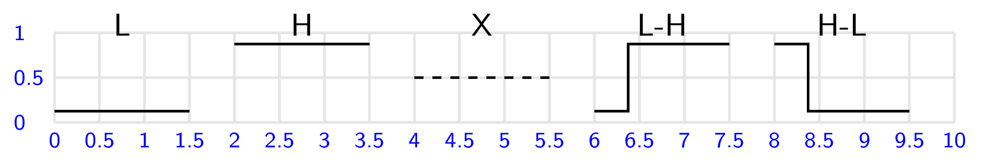
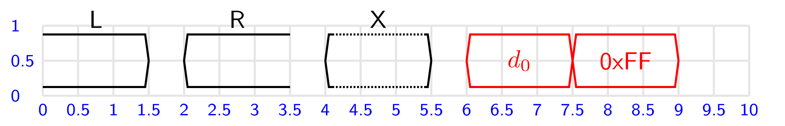
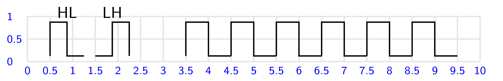

Časové priebehy #
Súčasťou mnohých elektronických zapojení sú priebehy signálov v elektronickom obvode závislé od času. Pre tvorbu časových priebehov môžeme využiť niektoré z dostupných programov ako napríklad plantuml, v CircuitMacros môžeme využiť jednoduchú knižnicu lib_time. Pri kreslení diagramov je vhodné použiť mriežku Grid(x,y), ktorá zjednodušuje orientáciu pri zadávaní časových priebehov a relácií medzi nimi.
Statické úrovne a prechody medzi úrovňami#
Hodnota amplitúdy logických úrovní pre príkazy kreslenia elementov časového priebehu je prednastavená na hodnotu 0.7, pre kreslenie priebehu je začiatkom zadaný stred logickej stopy. Amplitúdu logických úrovní je možné zmeniť hodnotou premennej pulse_level.
Každý element časového priebehu je “orámovaný” neviditeľným boxom označeným ako B, tento je možné využiť v prípade potreby ako referenciu pre polohovanie popisu priebehu.
level(d, L|H|X, D) - vykreslenie logických úrovní
pulse(d, delay, LH|NL) - vykreslenie prechodov medzi logickými úrovňami
parametre:
d - dĺžka stavu
L|H|X - úroveň L, H, X-neurčitý stav
D - čiarkovaný priebeh
delay - 0..1, oneskorenie zobrazenia prechodu, d*delay
{kind=link}

Obr. 53 Statické úrovne a prechody medzi úrovňami.#
Dáta #
V časových diagramoch dáta reprezentujú binárny vektor, hodnota alebo symbolické označenie vektora je zvyčajne súčasťou zobrazenia dát.
data(d, text, L|R|X) - vykreslenie dát
parametre:
d - dĺžka stavu
text - hodnota alebo označenie dát, text v úvodzovkách
L|R|X - typ dát, otvorené zľava, zprava, neučité / opakované dáta
{kind=link}

Obr. 54 Vykreslenie dát s popisom.#
Hodinové impulzy #
Hodinové impulzy sú zvyčajne sekvenciou opakujúcich sa impulzov so striedou 1:1. Pre zobrazenie sekvencie hodinovým impulzov môžeme použiť príkaz cyklu.
clock(d, HL|LH) - vykreslenie hodinového impulzu
parametre:
d - dĺžka stavu
HL|LH - fáza hodinového impulzu
{kind=link}

Obr. 55 Hodinove impulzy.#
Jednoduchý diagram #
Na diagrame je znázornený priebeh generovania PWM signálu časovačom procesora STM32L476 v móde 1.
{kind=link}

Obr. 56 Generovanie PWM signálu.#
Zdrojový kód
.PS
pi=3.14159265359
# parametre z PIC (resp. GNU PIC)
scale = 2.54 # cm - jednotka pre obrazok
maxpswid = 30 # rozmery obrazku
maxpsht = 30 # 30 x 30cm, default je 8.5x11 inch
cct_init # inicializacia lokalnych premennych
arrowwid = 0.127 # parametre sipok - sirka
arrowht = 0.254 # dlzka
include(lib_base.ckt)
include(lib_time.ckt)
include(lib_color.ckt)
command "\sf"
Origin: Here
Grid(13,5); # vykreslenie pomocnej mriezky, origin je (0,0)
d=1.5
move to (2.5,4);
"\small{CK\_CNT}" at Here rjust;
level(1,L)
for i=0 to 5 do{
clock(0.5, HL)
level(1,L)
}
move to (2.5,3);
"\small{Counter}" at Here rjust;
data(d-0.5, "6" ,L); data(d,"7"); data(d,"8"); data(d,"9"); data(d,"0"); data(d,"1"); data(d-0.5,"2", R)
move to (2.5,2);
"\small{PWM 1}" at Here rjust;
level(2.5,H); pulse(3,0, HL); pulse(4.5,0, LH)
move to (2.5,1);
"\small{UPDATE Flag}" at Here rjust;
level(5.5,L); pulse(0.5, 0.0, LH); level(3.5,H);
color_red;
line from (5, 0) to (5, 5) dashed .08;
line from (8, 0) to (8, 5) dashed .08;
.PE